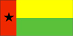

{kind=link}


![[Country map of Guinea-Bissau]](../maps/pu-map.jpg)
| Guinea-Bissau |  |
|
| | |
| Introduction |
Background: In 1994, 20 years after independence from Portugal, the country's first multiparty legislative and presidential elections were held. An army uprising that triggered a bloody civil war in 1998, created hundreds of thousands of displaced persons. The president was ousted by a military junta in May 1999. An interim government turned over power in February 2000 when opposition leader Koumba YALLA took office following two rounds of transparent presidential elections. Guinea-Bissau's transition back to democracy will be complicated by a crippled economy devastated by civil war and the military's predilection for governmental meddling.
| Geography |
Location: Western Africa, bordering the North Atlantic Ocean, between Guinea and Senegal
Geographic coordinates: 12 00 N, 15 00 W
Map references: Africa
Area:
total:
36,120 sq km
land:
28,000 sq km
water:
8,120 sq km
Area - comparative: slightly less than three times the size of Connecticut
Land boundaries:
total:
724 km
border countries:
Guinea 386 km, Senegal 338 km
Coastline: 350 km
Maritime claims:
exclusive economic zone:
200 nm
territorial sea:
12 nm
Climate: tropical; generally hot and humid; monsoonal-type rainy season (June to November) with southwesterly winds; dry season (December to May) with northeasterly harmattan winds
Terrain: mostly low coastal plain rising to savanna in east
Elevation extremes:
lowest point:
Atlantic Ocean 0 m
highest point:
unnamed location in the northeast corner of the country 300 m
Natural resources: fish, timber, phosphates, bauxite, unexploited deposits of petroleum
Land use:
arable land:
11%
permanent crops:
1%
permanent pastures:
38%
forests and woodland:
38%
other:
12% (1993 est.)
Irrigated land: 17 sq km (1993 est.)
Natural hazards: hot, dry, dusty harmattan haze may reduce visibility during dry season; brush fires
Environment - current issues: deforestation; soil erosion; overgrazing; overfishing
Environment - international agreements:
party to:
Biodiversity, Climate Change, Desertification, Endangered Species, Law of the Sea, Wetlands
signed, but not ratified:
none of the selected agreements
| People |
Population: 1,285,715 (July 2000 est.)
Age structure:
0-14 years:
42% (male 271,100; female 272,304)
15-64 years:
55% (male 335,150; female 370,667)
65 years and over:
3% (male 16,574; female 19,920) (2000 est.)
Population growth rate: 2.4% (2000 est.)
Birth rate: 39.63 births/1,000 population (2000 est.)
Death rate: 15.62 deaths/1,000 population (2000 est.)
Net migration rate: 0 migrant(s)/1,000 population (2000 est.)
Sex ratio:
at birth:
1.03 male(s)/female
under 15 years:
1 male(s)/female
15-64 years:
0.9 male(s)/female
65 years and over:
0.83 male(s)/female
total population:
0.94 male(s)/female (2000 est.)
Infant mortality rate: 112.25 deaths/1,000 live births (2000 est.)
Life expectancy at birth:
total population:
49.04 years
male:
46.77 years
female:
51.37 years (2000 est.)
Total fertility rate: 5.27 children born/woman (2000 est.)
Nationality:
noun:
Guinean (s)
adjective:
Guinean
Ethnic groups: African 99% (Balanta 30%, Fula 20%, Manjaca 14%, Mandinga 13%, Papel 7%), European and mulatto less than 1%
Religions: indigenous beliefs 50%, Muslim 45%, Christian 5%
Languages: Portuguese (official), Crioulo, African languages
Literacy:
definition:
age 15 and over can read and write
total population:
53.9%
male:
67.1%
female:
40.7% (1997 est.)
| Government |
Country name:
conventional long form:
Republic of Guinea-Bissau
conventional short form:
Guinea-Bissau
local long form:
Republica da Guine-Bissau
local short form:
Guine-Bissau
former:
Portuguese Guinea
Data code: PU
Government type: republic, multiparty since mid-1991
Capital: Bissau
Administrative divisions:
9 regions (regioes, singular - regiao); Bafata, Biombo, Bissau, Bolama, Cacheu, Gabu, Oio, Quinara, Tombali
note:
Bolama may have been renamed Bolama/Bijagos
Independence: 24 September 1973 (unilaterally declared by Guinea-Bissau); 10 September 1974 (recognized by Portugal)
National holiday: Independence Day, 24 September (1973)
Constitution: 16 May 1984, amended 4 May 1991, 4 December 1991, 26 February 1993, 9 June 1993, and 1996
Legal system: NA
Suffrage: 18 years of age; universal
Executive branch:
chief of state:
President Koumba YALLA (since 18 February 2000)
head of government:
Prime Minister Caetana N'TCHAMA (since NA February 2000)
cabinet:
NA
elections:
president elected by popular vote for a five-year term; election last held 28 November 1999 and 16 January 2000 (next to be held NA 2004); prime minister appointed by the president after consultation with party leaders in the legislature
election results:
Koumba YALLA elected president; percent of vote, second ballot - Koumba YALLA (PRS) 72%, Malan Bacai SANHA (PAIGC) 28%
Legislative branch:
unicameral National People's Assembly or Assembleia Nacional Popular (100 seats; members are elected by popular vote to serve a maximum of four years)
elections:
last held 28 November 1999 (next to be held by NA 2003)
election results:
percent of vote by party - NA; seats by party - PRS 37, RGB 27, PAIGC 25, 11 remaining seats went to 5 of the remaining 10 parties that fielded candidates
Judicial branch: Supreme Court or Supremo Tribunal da Justica, consists of nine justices who are appointed by the president and serve at his pleasure, final court of appeals in criminal and civil cases; Regional Courts, one in each of nine regions, first court of appeals for sectoral court decisions, hear all felony cases and civil cases valued at over $1,000; 24 Sectoral Courts, judges are not necessarily trained lawyers, hear civil cases under $1,000 and misdemeanor criminal cases
Political parties and leaders: African Party for the Independence of Guinea-Bissau and Cape Verde or PAIGC [Malan Bacai SANHA]; Front for the Liberation and Independence of Guinea or FLING [Jose Katengul M. ENDES]; Guinea-Bissau Resistance-Ba Fata Movement or RGB-MB [Domingos FERNANDES Gomes]; Guinean Civic Forum or FCG [Antonieta Rosa GOMES]; International League for Ecological Protection or LIPE [Alhaje Bubacar DJALO, president]; National Union for Democracy and Progress or UNDP [Abubacer BALDE, secretary general]; Party for Democratic Convergence or PCD [Victor MANDINGA]; Social Renovation Party or PRS [Koumba YALLA]; Union for Change or UM [Jorge MANDINGA, president, Dr. Anne SAAD, secretary general]; United Social Democratic Party or PUSD [Victor Sau'de MARIA]
International organization participation: ACCT (associate), ACP, AfDB, ECA, ECOWAS, FAO, FZ, G-77, IBRD, ICAO, ICFTU, ICRM, IDA, IDB, IFAD, IFC, IFRCS, ILO, IMF, IMO, Intelsat (nonsignatory user), Interpol, IOC, IOM, ITU, NAM, OAU, OIC, OPCW, UN, UNCTAD, UNESCO, UNIDO, UPU, WADB (regional), WAEMU, WFTU, WHO, WIPO, WMO, WToO, WTrO
Diplomatic representation in the US:
chief of mission:
Ambassador Mario LOPES DA ROSA
chancery:
Suite 519, 1511 K Street, NW, Washington, DC 20005
telephone:
[1] (202) 347-3950
FAX:
[1] (202) 347-3954
Diplomatic representation from the US: the US Embassy suspended operations on 14 June 1998 in the midst of violent conflict between forces loyal to then President VIEIRA and military-led junta
Flag description: two equal horizontal bands of yellow (top) and green with a vertical red band on the hoist side; there is a black five-pointed star centered in the red band; uses the popular pan-African colors of Ethiopia
| Economy |
Economy - overview: One of the 20 poorest countries in the world, Guinea-Bissau depends mainly on farming and fishing. Cashew crops have increased remarkably in recent years, and the country now ranks sixth in cashew production. Guinea-Bissau exports fish and seafood along with small amounts of peanuts, palm kernels, and timber. Rice is the major crop and staple food. However, intermittent fighting between Senegalese-backed government troops and a military junta destroyed much of the country's infrastructure and caused widespread damage to the economy in 1998; the civil war led to a 28% drop in GDP that year, with partial recovery in 1999. Before the war, trade reform and price liberalization were the most successful part of the country's structural adjustment program under IMF sponsorship. The tightening of monetary policy and the development of the private sector had also begun to reinvigorate the economy. Because of high costs, the development of petroleum, phosphate, and other mineral resources is not a near-term prospect. However, unexploited off-shore oil reserves could provide much-needed revenue in the long run.
GDP: purchasing power parity - $1.1 billion (1999 est.)
GDP - real growth rate: 9.5% (1999 est.)
GDP - per capita: purchasing power parity - $900 (1999 est.)
GDP - composition by sector:
agriculture:
54%
industry:
11%
services:
35% (1996 est.)
Population below poverty line: 50% (1991 est.)
Household income or consumption by percentage share:
lowest 10%:
0.5%
highest 10%:
42.4% (1991)
Inflation rate (consumer prices): 5.5% (1999)
Labor force: 480,000
Labor force - by occupation: agriculture 78%
Unemployment rate: NA%
Budget: $NA
Industries: agricultural products processing, beer, soft drinks
Industrial production growth rate: 2.6% (1997 est.)
Electricity - production: 40 million kWh (1998)
Electricity - production by source:
fossil fuel:
100%
hydro:
0%
nuclear:
0%
other:
0% (1998)
Electricity - consumption: 37 million kWh (1998)
Electricity - exports: 0 kWh (1998)
Electricity - imports: 0 kWh (1998)
Agriculture - products: rice, corn, beans, cassava (tapioca), cashew nuts, peanuts, palm kernels, cotton; timber; fish
Exports: $26.8 million (f.o.b., 1998)
Exports - commodities: cashew nuts 70%, shrimp, peanuts, palm kernels, sawn lumber (1996)
Exports - partners: India 59%, Singapore 12%, Italy 10% (1997)
Imports: $22.9 million (f.o.b., 1998)
Imports - commodities: foodstuffs, machinery and transport equipment, petroleum products (1996)
Imports - partners: Portugal 26%, France 8%, Senegal 8%, Netherlands 7% (1997)
Debt - external: $921 million (1997 est.)
Economic aid - recipient: $115.4 million (1995)
Currency: 1 Communaute Financiere Africaine franc (CFAF) = 100 centimes
Exchange rates:
Communaute Financiere Africaine francs (CFAF) per US$1 - 647.25 (January 2000), 615.70 (1999), 589.95 (1998), 583.67 (1997); Guinea-Bissauan pesos (PG) per US$1 - 26,373 (1996), 18,073 (1995)
note:
as of 1 May 1997, Guinea-Bissau adopted the CFA franc as the national currency following its membership in BCEAO; since 1 January 1999, the CFAF is pegged to the euro at a rate of 655.957 CFA francs per euro
Fiscal year: calendar year
| Communications |
Telephones - main lines in use: 13,120 (1995)
Telephones - mobile cellular: NA
Telephone system:
small system
domestic:
combination of microwave radio relay, open-wire lines, radiotelephone, and cellular communications
international:
NA
Radio broadcast stations: AM 1, FM 2, shortwave 0 (1998)
Radios: 49,000 (1997)
Television broadcast stations: 2 (1997)
Televisions: NA
Internet Service Providers (ISPs): NA
| Transportation |
Railways: 0 km
Highways:
total:
4,400 km
paved:
453 km
unpaved:
3,947 km (1996 est.)
Waterways: several rivers are accessible to coastal shipping
Ports and harbors: Bissau, Buba, Cacheu, Farim
Merchant marine: none (1999 est.)
Airports: 30 (1999 est.)
Airports - with paved runways:
total:
3
over 3,047 m:
1
1,524 to 2,437 m:
1
914 to 1,523 m:
1 (1999 est.)
Airports - with unpaved runways:
total:
27
1,524 to 2,437 m:
1
914 to 1,523 m:
4
under 914 m:
22 (1999 est.)
| Military |
Military branches: People's Revolutionary Armed Force (FARP; includes Army, Navy, and Air Force), paramilitary force
Military manpower - availability:
males age 15-49:
296,482 (2000 est.)
Military manpower - fit for military service:
males age 15-49:
168,930 (2000 est.)
Military expenditures - dollar figure: $8 million (FY96)
Military expenditures - percent of GDP: 2.8% (FY96)
| Transnational Issues |
Disputes - international: none